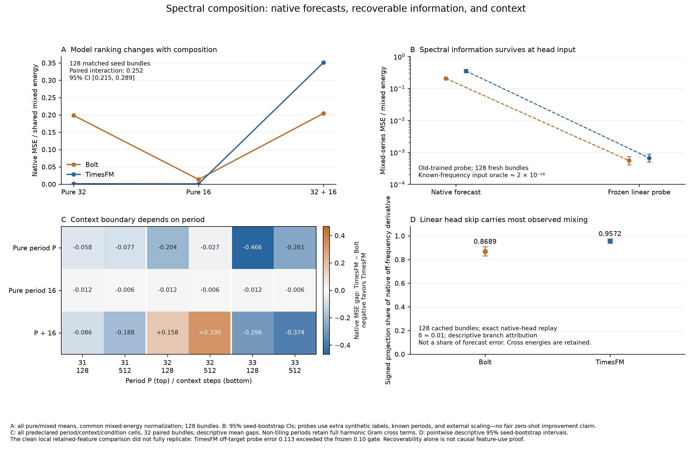
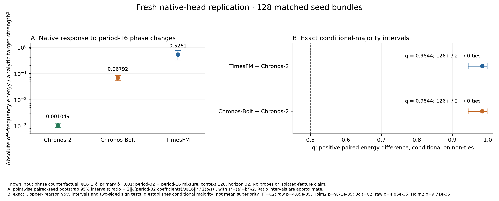

A controlled feature-comparison workflow links known input composition, actual forecast-head recoverability and native use, context/patch boundaries, and robustness to representation choices. These are complementary measurements: accurate decoding alone does not establish effective native use.
Reproduce the feature-interference audit · Inspect window robustness · Portable source summary · Replication planner usage
No reliable model-exclusive causal feature has been established. Behavioral input interventions are not isolated hidden-feature interventions. This comparison does not establish a universal winning model or pooling method.

| Branch | Scope | Reported evidence | Decision and limit |
|---|---|---|---|
| Controlled composition | Fresh two-frequency replication | Mixed-minus-pure model-gap interaction: 0.25178730121876025 | Promoted behavioral input-intervention diagnostic; not a hidden-feature cause. |
| Actual native head | Fresh 128-seed, three-model replication | bolt: 0.0679202943; timesfm: 0.52614528; chronos2: 0.00104934692 | Absolute off-frequency energy ratios at delta 0.01; recoverability and native use differ. |
| Window sensitivity | Matched physical extent, whole-series grouped comparisons | Mean, native concatenation and common-grid concatenation; fixed PCA ranks | Choice, rank and data dependence; no universal best representation. |
| Frozen SAE hierarchy | ROADMAP §48.2 | All three promotion conditions fail; uncompressed codes score 1.0 on both tasks | Closed limited frozen-dictionary ablation; not a full SAE++ rejection. |
| Specialized phase subspaces | ROADMAP §48.6 | All four specialization gates fail | Accurate phase decoding does not establish a privileged causal direction. |
| Frozen TimesFM probe | ROADMAP §48.13 | Off-target relative RMS 0.113262 exceeds frozen threshold 0.1 | Retention comparison fails; significant energy contrasts do not rescue the gate. |
| Trend–seasonality | ROADMAP §48.16 | 0/12 pass the absolute practical threshold 0.05 | Closed without promotion; two-frequency behavior is not universal composition failure. |

The historical native interference example retains its registered mean contrasts. Its sign-flip inference requires symmetry/exchangeability and is not calibrated for arbitrary skew. New prospective studies can predeclare exact two-sided q = P(D > 0 | D ≠ 0, jointly identifiable). Exact q evidence does not establish mean-MSE superiority or practical relevance. Endpoint families receive separate Holm correction; secondary evidence cannot rescue the selected primary family. Confidence intervals are pointwise. Undefined phase excludes the matched bundle and changes the conditional estimand.
Whole-series window permutations preserve dependent windows and assess identity alignment, not learned features conditional on inputs. Raw CKA depends on dimensionality and covariance spectrum; matched PCA rank does not match the full spectrum. Sequence-level concatenation supplies a window-partition invariance control.
Prior work already studies TSFM concepts, composition and component attribution. No novelty or universal monosemanticity claim is made. Pandey et al.: Internal Semantics · Bao et al.: Universal Redundancies · Yildirim: PatchTST superposition study · SAE++: Cascaded Sparse Autoencoders.
Rebuild this page without model caches or run stores, from the repository root:
python tsfm_lens/experiments/feature_search/research_overview.py --summary examples/feature_search_20261111/study_summary.json --out examples/feature_search_20261111_rebuild
{
"rows": [
[
"Controlled composition",
"Fresh two-frequency replication",
"Mixed-minus-pure model-gap interaction: 0.25178730121876025",
"Promoted behavioral input-intervention diagnostic; not a hidden-feature cause."
],
[
"Actual native head",
"Fresh 128-seed, three-model replication",
"bolt: 0.0679202943; timesfm: 0.52614528; chronos2: 0.00104934692",
"Absolute off-frequency energy ratios at delta 0.01; recoverability and native use differ."
],
[
"Window sensitivity",
"Matched physical extent, whole-series grouped comparisons",
"Mean, native concatenation and common-grid concatenation; fixed PCA ranks",
"Choice, rank and data dependence; no universal best representation."
],
[
"Frozen SAE hierarchy",
"ROADMAP \u00a748.2",
"All three promotion conditions fail; uncompressed codes score 1.0 on both tasks",
"Closed limited frozen-dictionary ablation; not a full SAE++ rejection."
],
[
"Specialized phase subspaces",
"ROADMAP \u00a748.6",
"All four specialization gates fail",
"Accurate phase decoding does not establish a privileged causal direction."
],
[
"Frozen TimesFM probe",
"ROADMAP \u00a748.13",
"Off-target relative RMS 0.113262 exceeds frozen threshold 0.1",
"Retention comparison fails; significant energy contrasts do not rescue the gate."
],
[
"Trend\u2013seasonality",
"ROADMAP \u00a748.16",
"0/12 pass the absolute practical threshold 0.05",
"Closed without promotion; two-frequency behavior is not universal composition failure."
]
],
"sources": {
"FINDINGS.md": "8895b81d9658f094dc5d4cda15d0ce3c5a1188cd4fae01023f19f374f00c0ec0",
"ROADMAP.md": "6abbaac58b06ed97dfa7299c6e41accd03047212ab157a9962bc36bff9dc1ac9",
"examples/feature_search_20261111/source_data.json": "dcb2aca8d9687f66a9c896d1412a49d2805b73d263a52d86d5a5dfdaa99e6cd3",
"examples/feature_search_20261111/native_head_replication_source_data.json": "89701b348204526cd3885dc8d0f292c34ba69e12dbb2a72619b0bcfc28a965cb",
"examples/feature_interference/results.json": "7b7b5486abda18ba0fa2ce7ce066bbf7a8edb1c411dae8dc030816f89129a386",
"examples/window_robustness/results.json": "9f1fa7c6810daf02fc00c49243579b846588dd83bb471e713d6a26d49a7635ab"
},
"native_comparisons": {
"timesfm_minus_chronos2": {
"value": 0.5250959333814048,
"lo": 0.3280945788163841,
"hi": 0.7723828712240296,
"n_seeds": 128,
"sign_test": {
"positive": 126,
"negative": 2,
"ties": 0,
"n_non_ties": 128,
"q": 0.984375,
"q_cp95": [
0.944697409977551,
0.9981021068782607
],
"p": 4.853028427369814e-35,
"majority_positive": true
},
"scope": "ratio interval approximate;exact sign test establishes conditional majority,not assumption-free mean superiority",
"minimum_point_effect": 0.1,
"p_holm": 9.706056854739628e-35,
"passed": true
},
"bolt_minus_chronos2": {
"value": 0.06687094742955753,
"lo": 0.052205034722263094,
"hi": 0.08340006809074582,
"n_seeds": 128,
"sign_test": {
"positive": 126,
"negative": 2,
"ties": 0,
"n_non_ties": 128,
"q": 0.984375,
"q_cp95": [
0.944697409977551,
0.9981021068782607
],
"p": 4.853028427369814e-35,
"majority_positive": true
},
"scope": "ratio interval approximate;exact sign test establishes conditional majority,not assumption-free mean superiority",
"minimum_point_effect": 0.02,
"p_holm": 9.706056854739628e-35,
"passed": true
}
},
"interference_primary_estimand": "mean",
"literature": [
[
"Pandey et al.: Internal Semantics",
"https://arxiv.org/abs/2511.15324"
],
[
"Bao et al.: Universal Redundancies",
"https://proceedings.mlr.press/v306/bao26c.html"
],
[
"Yildirim: PatchTST superposition study",
"https://arxiv.org/abs/2605.05151"
],
[
"SAE++: Cascaded Sparse Autoencoders",
"https://arxiv.org/abs/2606.16193"
]
],
"scope": "Selected reported results only; this manifest is not a new scientific analysis."
}